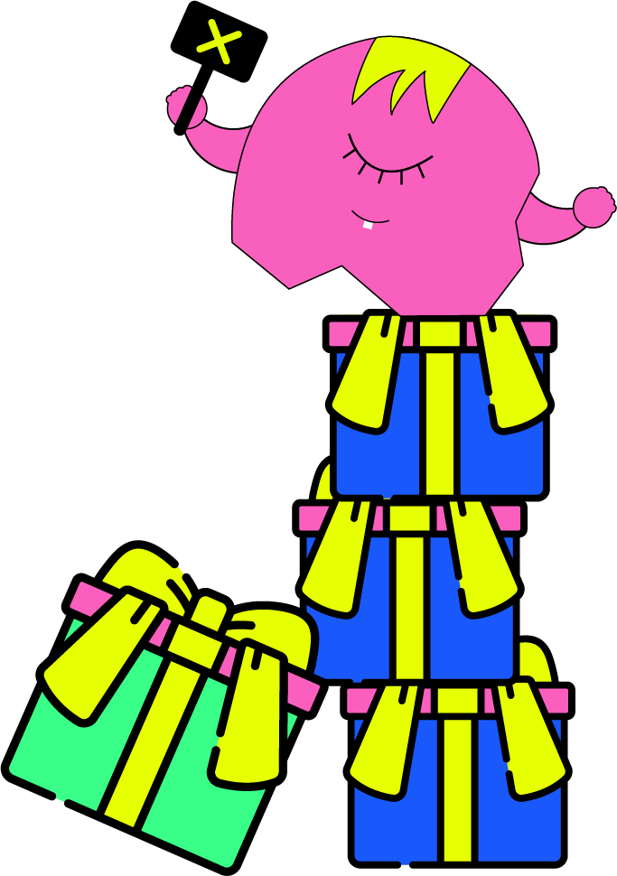

מה לעשות עם החפצים של האקס/ית
זה מה שנשאר...?
הדובי הפרוותי שהוא קנה לך ביום האהבה שעבר, הארנק החום שהביאה לך ביום ההולדת והתמונות הממוסגרות שתלויות על הקיר. האם זה שנפרדנו מחייב אותנו לזרוק את כל הטוב הזה?
הטיפוס הסנטימנטלי
אם סנטימנטים זורמים לך בדם וריחות וחפצים משתלטים לך על הזיכרון אז כדאי מאוד להיפטר מהחפצים. אפילו אם השעון שהוא קנה לך יושב עלייך בול, והחולצה שהיא קנתה לך היא היחידה שיש לך בארון. אם קשה לך לעשות את זה בעצמך, היעזר/י בחבר/ה שיעשו את זה עבורכם תסמכו עלינו שזה יהיה להם פחות כואב.
הטיפוס לא ביקשתי מתנה
אם את/ה הטיפוס שלא מייחס חשיבות למתנות ולחומר ולא שמרת את החולצה מהטיול השנתי של כיתה י״ב, כנראה שהבגדים לא יהיו מה שיזכיר לך את הפרידה הכואבת. ולכן המלצת המערכת היא לשמור ולהנות מהדברים השימושיים שנותרו נותנים לך תיקח!
הטיפוס המתרץ
אם אתם נכללים בטיפוס המתרץ עשו לנו טובה והיפטרו מהכל ומהר. אתם יודעים שאתם נכנעים לפעימות הלב והתירוץ האולטימטיבי לפגישה מחודשת הוא הבוקסר שהוא שכח אצלך, או השמלה "האהובה עליה" שהשאירה אצלך, אל תשאירו זכר לחפצים ודאגו להעביר אותם הלאה.
הטיפוס הממחזר
אם אתם נוטים לחשוב על כדור הארץ ובעיקר על הכיס שלכם ההמלצה היא למחזר! תעבירו את זה הלאה תצרו זיכרונות חדשים עם פנים אחרות וריח בושם חדש. אך לא בכל מצב:
- אם בדיוק לפני שנפרדתם קניתם מתנה מושקעת ויקרה שעדיין לא נעשה בה שימוש- דיינו!
- אם היא/הוא שכחו אצלכם במגירה גינס שלא נלבש, דיינו!
- אך אם הפריט כבר מכיל את ריח הבושם המזוהה עם האהוב/ה, אם מכונת הכביסה מכירה טוב טוב את הבגד, עשו טובה והחזירו את האבידה חזרה לבעליה והמשיכו למחזר בקבוקים בפח הירוק.
כמו (שהמלכה האם) מדונה אמרה-
"WE LIVING IN A MATERIAL WORLD"
זכרו, תמיד יהיו אנשים חדשים עם חפצים חדשים, גם אם עכשיו זה נראה רחוק. פנקו את עצמכם בסיבוב בקניון או בשיחה עם חברה. דאגו למלא אחר הוראות המערכת, הצלחה מובטחת!